Show other secondary papers
Chemo-mechanical coupling stabilizes mixed $\mathrm{Ag}_{x}\mathrm{Cu}_{1-x}\mathrm{GaSe}_{2}$ solar-cell absorbers: Insights from Monte-Carlo simulations assisted by ab initio informed machine-learning potentials
Authors: Vasilios Karanikolas, Delwin Perera, Linus Erhard, Jochen Rohrer, Karsten Albe
Type: theory · Category: disordered systems and neural networks · PDF: https://arxiv.org/pdf/2605.18057v1
Analysis basis: full PDF text, analyzed in chunks
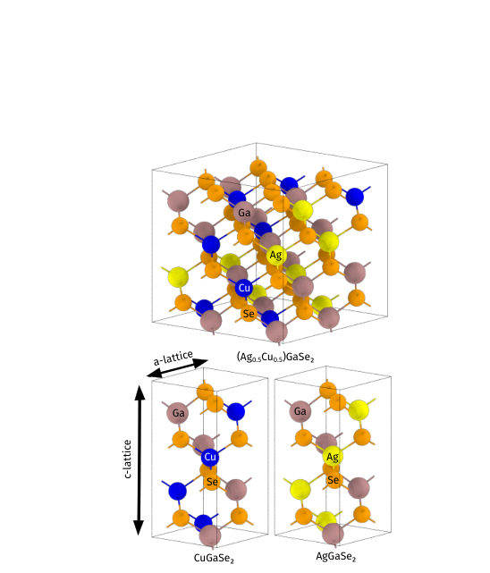
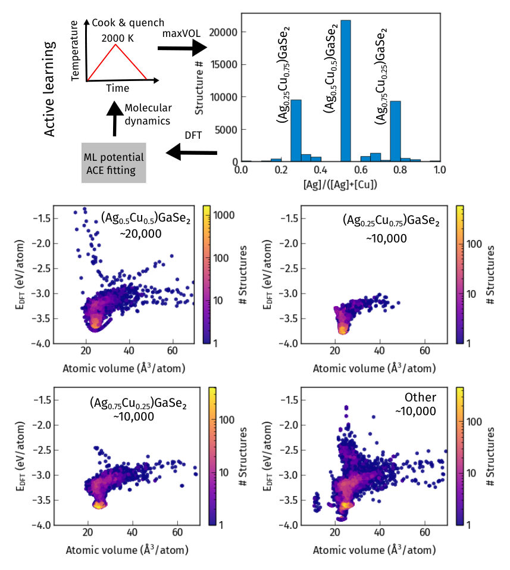
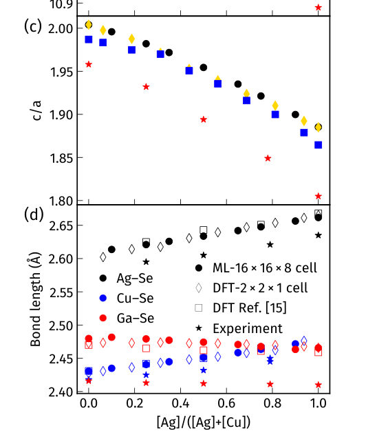
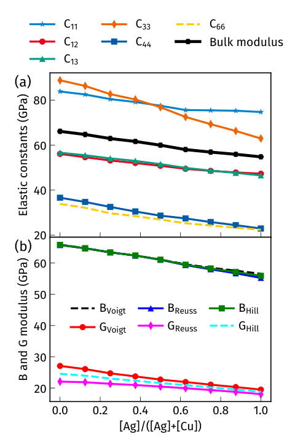
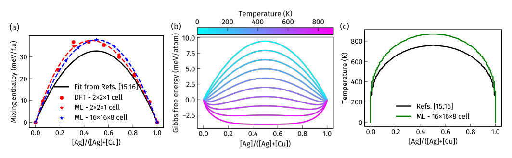
Summary. The paper uses machine learning-based interatomic potentials and Monte Carlo simulations to show that mechanical strain stabilizes Ag-Cu alloys in solar cells. It resolves a long-standing conflict between theory and experiment by demonstrating that coherency strain prevents the predicted phase separation. This provides a framework for understanding stability in systems where chemical and mechanical effects compete.
Why it may be interesting. not directly relevant
Detailed structure
Main problem. Resolving the discrepancy between ab initio predictions of a Ag-Cu miscibility gap and experimental observations of stable, homogeneous Ag-Cu distribution in solar-cell absorbers.
Main result. Coherency strain in the Ag-Cu alloy stabilizes the mixed phase by providing a negative elastic enthalpy that overcomes the chemical driving force for phase separation.
Method. Development of a machine learning interatomic potential using the Atomic Cluster Expansion (ACE) formalism, combined with active learning and large-scale Monte Carlo simulations.
Model / system. The system is the Ag-Cu-Ga-Se (ACGS) chalcopyrite alloy, specifically focusing on the Ag-Cu substitution on the group-I cation sublattice in thin-film solar cells.
Key observables. Mixing enthalpy, Gibbs free energy of mixing, Warren-Cowley short-range order parameter, lattice parameters (a and c), and stiffness tensor components (Cij).
Important parameters / regimes. Ag concentration (x), temperature (T), and the distinction between coherent and incoherent interface boundary conditions.
Assumptions / limitations. The study assumes the primary stabilizing mechanism is coherency strain and focuses on the tetragonal phase during the initial active learning cycles.
Figures summary. Figure 1 shows Ag-Cu structure vs. phase-separated structures; Figure 2 details the ML potential development workflow; Figure 3 shows structural and elastic properties vs. Ag content; Figure 5 presents phase diagrams and mixing energy; Figure 6 illustrates the time evolution of phase separation in coherent vs. incoherent interfaces; Figure 7 compares chemical and elastic enthalpy contributions.
Paper structure. The paper introduces the stability controversy, describes the ML potential development via active learning, validates the potential against DFT, applies it to large-scale Monte Carlo simulations to study phase stability, and concludes by comparing coherent and incoherent interface models.
Abstract
Alloying Ag into Cu(In,Ga)Se$_2$ has enabled record solar-cell efficiencies ($\sim23.6\%$), yet their long-term stability remains in question because initio calculations predict a Ag-Cu miscibility gap near ambient temperature. By off-lattice Monte-Carlo simulations using a newly developed machine learning (ML) interatomic potential we show that the presence of coherency strain is resolving the controversy between experimental observations and the predicted phase stability. Incorporating elastic energy contributions present in a coherent setup results in complete Ag-Cu miscibility, whereas the expected phase separation occurs in the absence of coherency strains with respect to the end boundary phases, which are mimicked by an incoherent interface with misfit dislocations. The developed ML-MC framework provides a novel approach for resolving discrepancies in thermodynamic stability for systems where mechanical and chemical effects compete.
Competition and coexistence of superconducting symmetries in $p$-wave magnets
Authors: J. E. C. Carmelo, I. R. Pimentel, P. D. Sacramento
Type: theory · Category: strongly correlated electrons · PDF: https://arxiv.org/pdf/2605.17649v1
Analysis basis: full PDF text, analyzed in chunks
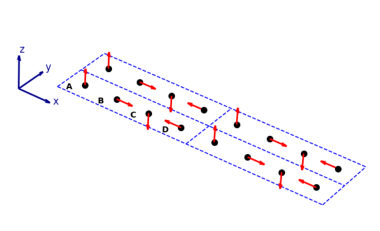
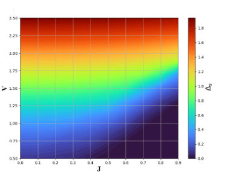
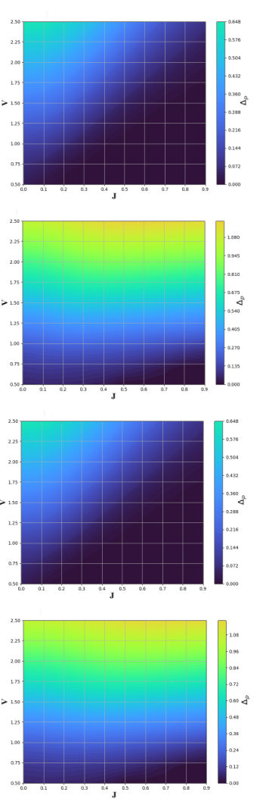
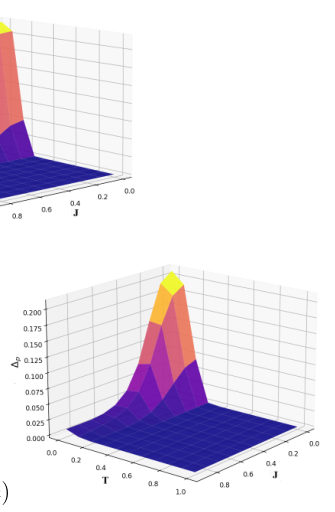
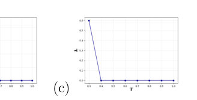
Summary. This paper demonstrates that p-wave magnetic textures do more than just suppress conventional superconductivity; they can actually stabilize and promote spin-triplet p-wave pairing. By analyzing different magnetic helix orientations, the authors identify specific regimes where different superconducting symmetries coexist or compete, suggesting that unconventional magnets are promising platforms for realizing robust triplet superconductivity.
Why it may be interesting. not directly relevant
Detailed structure
Main problem. The study investigates the interplay, competition, and coexistence between unconventional p-wave magnetism and different superconducting symmetries (spin-singlet s-wave and spin-triplet p-wave).
Main result. The researchers found that p-wave magnetic order can actively promote and stabilize spin-triplet p-wave pairing, with specific magnetic helix orientations driving quantum phase transitions between different pairing symmetries.
Method. The study uses a self-consistent Bogoliubov-de-Gennes (BdG) approach to numerically solve the microscopic equations on a lattice.
Model / system. A p-wave magnet on a square lattice featuring a helical magnetic structure along the x-direction, including electron hopping, Zeeman-like magnetic coupling, and superconducting pairing terms.
Key observables. Pairing amplitudes for s-wave and p-wave channels (mixed-spin and equal-spin), total spin projection (Sz), and critical temperatures (Tc).
Important parameters / regimes. Magnetic coupling strength (J), magnetic helix orientation (pMzy vs. pMzx), temperature (T), and superconducting coupling strengths (Vs, Vp).
Assumptions / limitations. Mean-field approximation for superconductivity; periodic boundary conditions; square lattice geometry.
Figures summary. Figure 1 illustrates the two different magnetic helix configurations (pMzy and pMzx) on the square lattice.
Paper structure. The paper introduces the magnetic helix model, details the BdG methodology, analyzes the competition/coexistence of pairing symmetries under varying magnetic coupling, and discusses the implications for proximity effects and material realization.
Abstract
We investigate the interplay between unconventional magnetism and superconductivity in a model of a $p$-wave magnet on a square lattice. Using a self-consistent Bogoliubov-de-Gennes approach, we analyze the pairing amplitudes, competition, and coexistence of spin-singlet $s$-wave and spin-triplet $p$-wave pairings in the presence of a magnetic texture with a helical structure along the $x$ direction that is repeated in the $y$ direction. We find that the magnetic helix selectively stabilizes different pairing symmetries depending on its orientation and strength. In particular, mixed-spin $p_x$-wave pairing is enhanced at intermediate magnetic couplings and equal-spin $p_y$-wave pairing is robust and insensitive to all coupling intensities. When the multiple order parameters are simultaneously considered, we find regimes of coexistence and competition. Increasing the magnetic coupling drives two quantum phase transitions. The first from dominant spin-singlet $s$-wave to mixed-spin triplet $p_x$-wave pairings in a regime of coexistence. The second from spin-singlet $s$-wave and mixed-spin triplet $p$-wave pairings with total spin projection $S_z=0$ to dominant equal-spin triplet $p_y$-wave pairings with $S_z=\pm1$ in a regime of mutually exclusive superconducting phases. Our results demonstrate that $p$-wave magnetic order does not merely diminish spin-singlet $s$-wave superconductivity but can actively promote and stabilize spin-triplet $p$-wave pairing, both intrinsically and in proximity to spin-singlet $s$-wave superconductors. These findings highlight unconventional magnets as promising materials for realizing robust triplet superconductivity.
Durable Enhancement of $\mathbf{MoS_2}$ Single-Layer Photoluminescence by Ultraviolet Laser Treatment Under Ambient Conditions
Authors: Mahan Bakhshikhah, Jiří Liška, Rahul Kesarwani, Jindřich Mach, Ondřej Červinka, Petr Dub, Jiří Spousta, Jan Přibyl, Jana Kalbáčová Vejpravová, Tomáš Šikola
Type: experiment · Category: other · PDF: https://arxiv.org/pdf/2605.17363v1
Analysis basis: full PDF text, analyzed in chunks
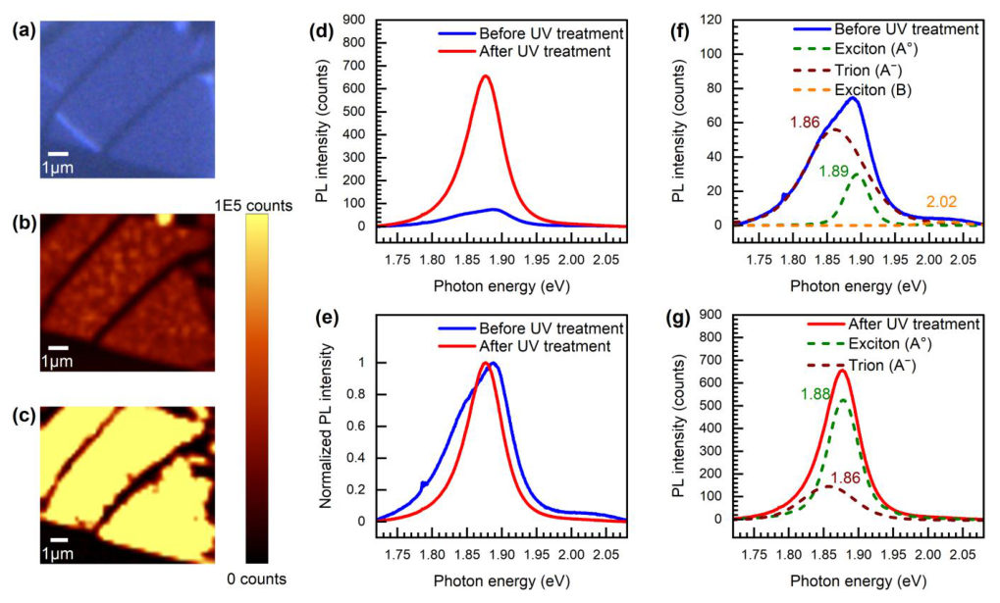
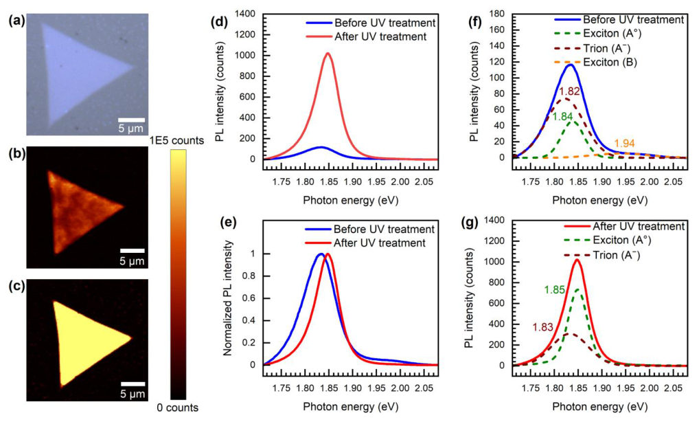
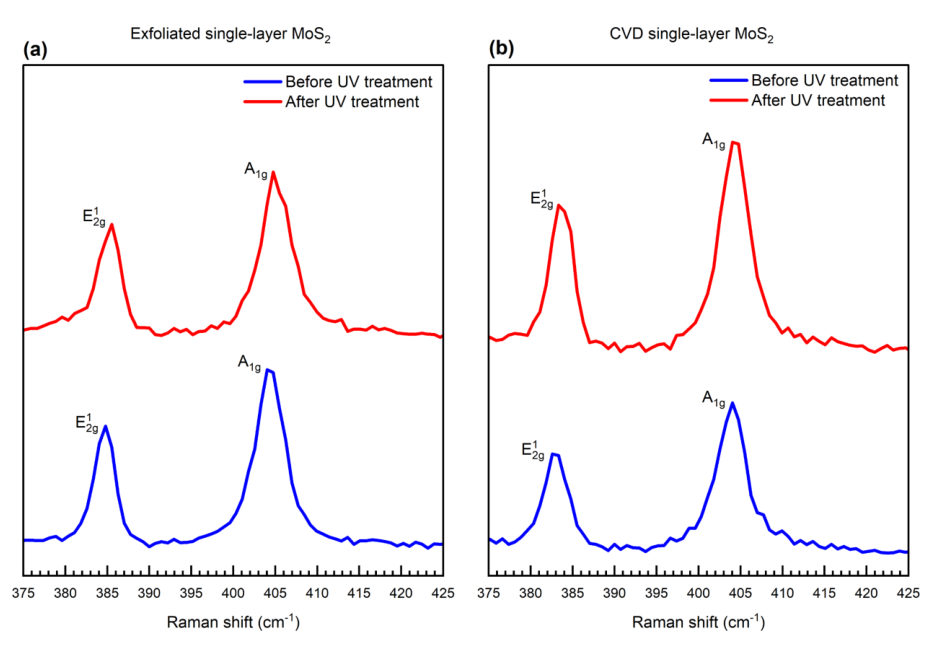
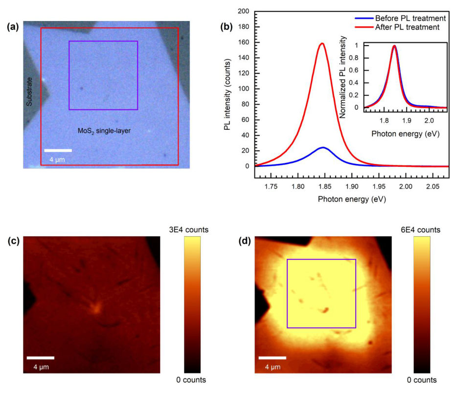
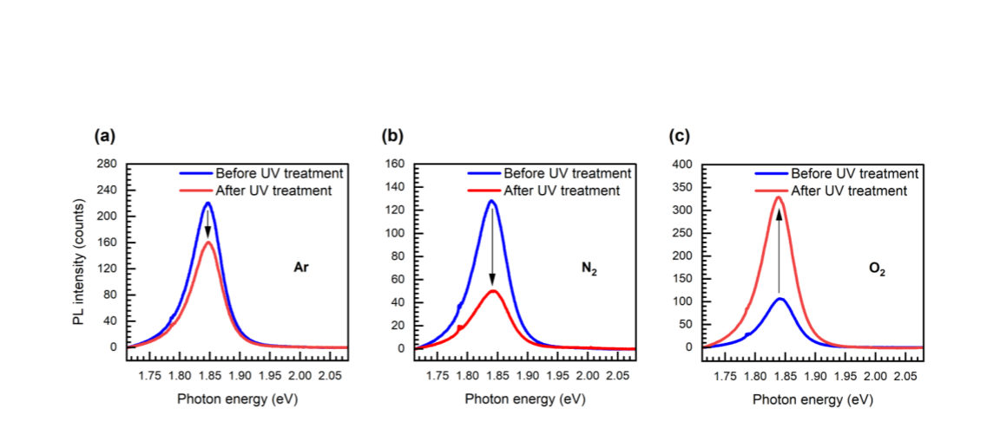
Summary. This paper demonstrates a method to significantly and durably boost the photoluminescence of single-layer MoS2 using a UV laser under ambient conditions. The process works by using oxygen to heal sulfur vacancies and convert trions into bright neutral excitons. This provides a reliable way to create high-performance, stable 2D materials for nanophotonic applications.
Why it may be interesting. not directly relevant
Detailed structure
Main problem. Achieving high-intensity, long-term stable photoluminescence (PL) in single-layer MoS2 by overcoming low quantum yield caused by sulfur vacancies and non-radiative recombination.
Main result. A non-destructive UV laser treatment under ambient conditions achieves up to an 8-fold enhancement in PL intensity by inducing oxygen chemisorption, which passivates defects and induces p-type doping.
Method. Continuous-wave UV laser irradiation (355 nm) of exfoliated and CVD-grown MoS2 flakes, combined with Raman spectroscopy, PL mapping, and controlled-atmosphere chamber studies.
Model / system. Single-layer molybdenum disulfide (MoS2) flakes, including both mechanically exfoliated and CVD-grown domains, placed on c-cut sapphire substrates.
Key observables. PL intensity (peak height and integrated area), PL spectral features (FWHM, trion-to-neutral exciton transition), Raman mode shifts (E2g and A1g), and surface roughness (RMS).
Important parameters / regimes. UV laser wavelength (355 nm), laser power (4 mW), atmospheric composition (O2, Ar, N2), and long-term stability duration (up to 72 days).
Assumptions / limitations. The enhancement is driven by oxygen-mediated passivation rather than purely thermal or structural damage effects.
Figures summary. Figure 1 shows PL maps and spectra for exfoliated MoS2 demonstrating intensity increase and spectral narrowing; Figure 2 shows similar enhancement in CVD MoS2; Figure 3 displays Raman blue shifts; Figure 4 demonstrates spatial control of the treatment; Figure 5 shows the necessity of oxygen for enhancement; Figure 6 tracks long-term stability.
Paper structure. The paper introduces the problem of low PL in MoS2, presents the UV treatment method and its dramatic enhancement effects, provides spectroscopic evidence for the mechanism (oxygen-induced p-doping and defect healing), demonstrates spatial precision and atmospheric dependence, and concludes with long-term stability and structural integrity analysis.
Abstract
Single-layer molybdenum disulfide ($MoS_2$) possesses significant potential for nanoscale optoelectronics, but achieving high-intensity, long-term-stable photoluminescence (PL) emission remains a challenge. In this work, we demonstrate a remarkably robust, more than 8-fold maximum enhancement in the PL intensity of exfoliated and CVD-grown single-layer $MoS_2$ via a non-destructive ultraviolet (UV) laser treatment method. This substantial increase in radiative efficiency is accompanied by a trion-to-neutral exciton transition in the PL signal and a corresponding blue shift of the Raman $E_{2g}^1$ and $A_{1g}$ vibrational modes, signaling successful electron depletion (p-doping) and formation of Mo-O bonds, respectively. Furthermore, we demonstrate precise spatial control over PL properties by confining PL treatment exclusively to the UV laser-treated area. Crucially, the enhanced PL performance shows exceptional longevity; the CVD sample and the exfoliated sample remained stable for the entire monitoring period (72 and 32 days, respectively) under ambient conditions. We further investigated UV laser treatment in a controlled-environment chamber under argon, nitrogen, and oxygen atmospheres, distinguishing the influence of oxygen as the PL treatment agent. These findings establish a reliable pathway for the permanent treatment of single-layer $MoS_2$ PL properties, an essential step toward practical, high-performance nanophotonic devices.
Formation of mechanical rogue waves
Authors: Yasuhiro Miyazawa, Christopher Chong, Panayotis G. Kevrekidis, Jinkyu Yang
Type: both · Category: other · PDF: https://arxiv.org/pdf/2605.18518v1
Analysis basis: full PDF text, analyzed in chunks
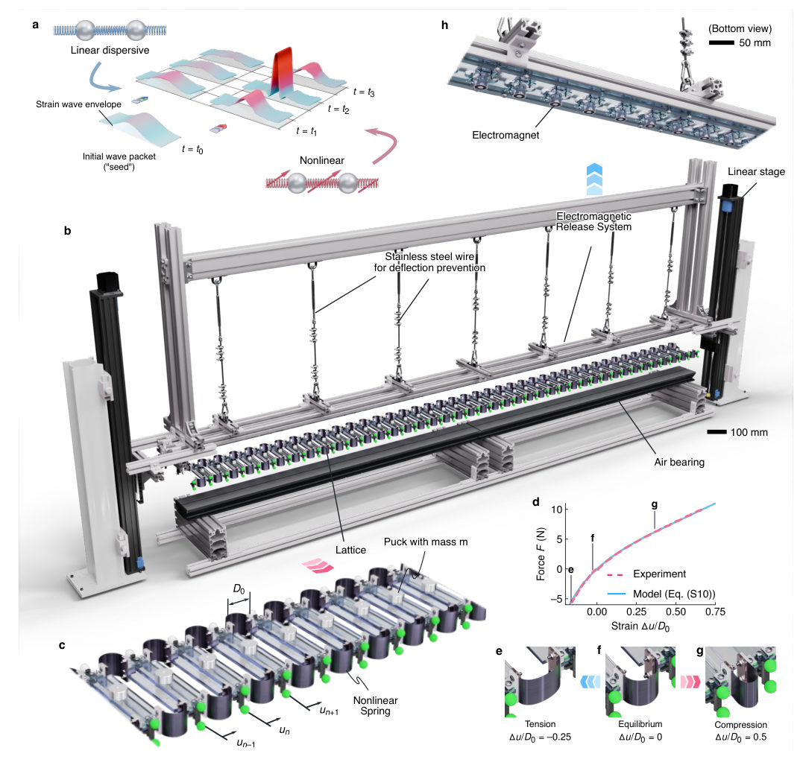
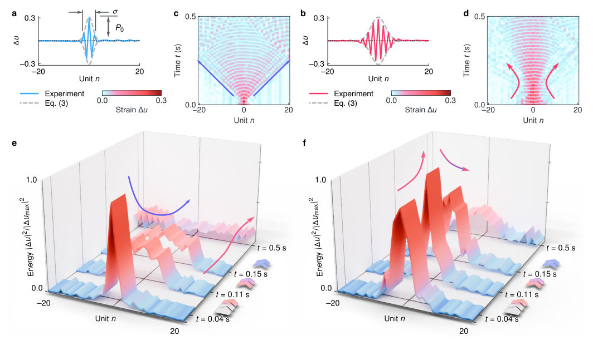
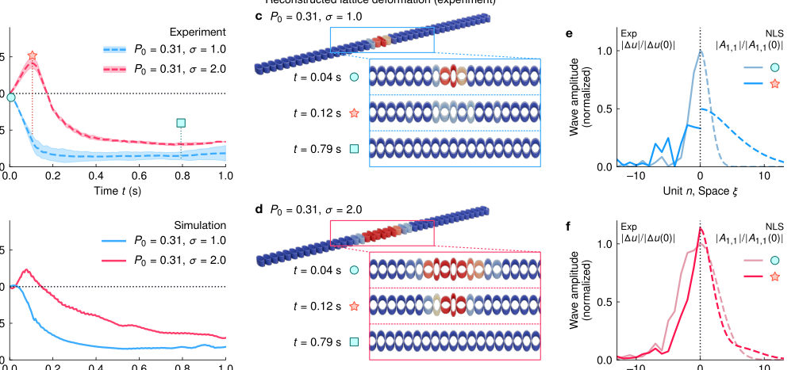
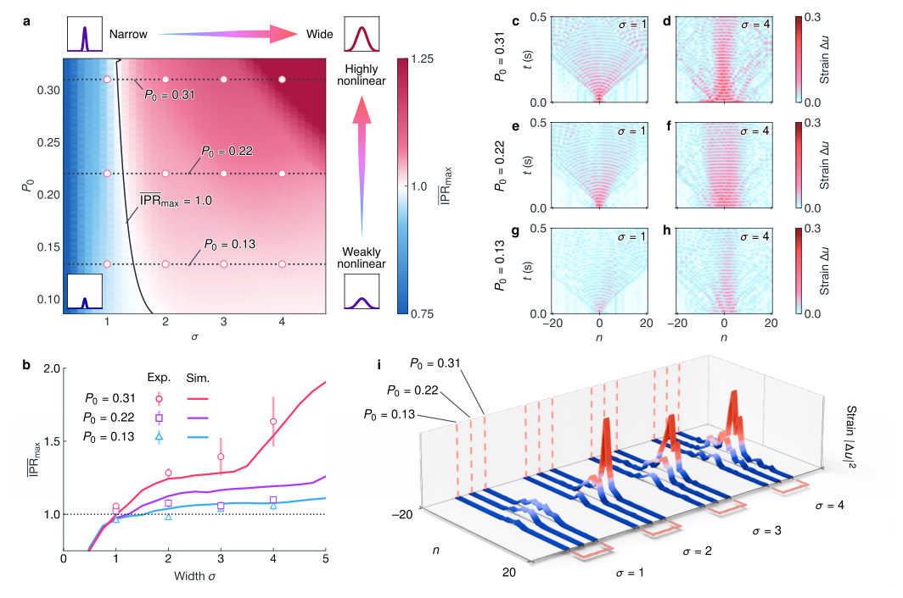
Summary. This paper reports the first experimental realization of mechanical rogue waves in a 1D nonlinear metamaterial lattice. It reveals that extreme wave localization is a synergistic effect requiring both high nonlinearity and a sufficiently wide initial energy reservoir to overcome dispersion. These findings provide a platform for studying transient nonlinear wave focusing for applications like energy harvesting and signal processing.
Why it may be interesting. not directly relevant
Detailed structure
Main problem. The experimental realization of mechanical rogue waves has been elusive due to challenges in controlling nonlinearity and overcoming energy dissipation. The study specifically investigates whether extreme energy focusing requires a narrow seed or a wide spatial energy reservoir.
Main result. The researchers demonstrate that the formation of mechanical rogue waves requires a synergy between high nonlinearity and a broad spatial energy reservoir; neither high amplitude nor wide initial width alone is sufficient to overcome dispersion.
Method. The study uses a 1D mechanical metamaterial lattice with an electromagnetic release system to prescribe initial strain profiles. Experimental results are validated against numerical simulations using the Nonlinear Schrödinger Equation (NLSE) and FPUT-type models.
Model / system. A 1D mechanical metamaterial lattice consisting of 41 nonlinear spring units (pucks) on a low-friction air-bearing support. The dynamics are modeled by the Fermi-Pasta-Ulam-Tsingou (FPUT) framework and the Nonlinear Schrödinger Equation (NLSE).
Key observables. Spatiotemporal evolution of the lattice, instantaneous spatial strain profiles, wave packet envelope amplitude, and the Inverse Participation Ratio (IPTR) as a metric for localization.
Important parameters / regimes. Initial peak strain amplitude (P0), initial Gaussian width (sigma), and the zone-boundary mode (k = pi).
Assumptions / limitations. The system is assumed to be in a Hamiltonian scenario where the dynamics can be approximated by the NLSE, and inherent dissipation is assumed to be low enough to allow for observable focusing.
Figures summary. Fig 1 shows the experimental setup and the asymmetric force-strain relationship. Fig 2 compares the spatiotemporal evolution and strain profiles of narrow vs. wide seeds. Fig 3 compares experimental IPR and lattice deformation with NLS predictions. Fig 4 presents a parametric study of IPR_max across the P0 and sigma parameter space.
Paper structure. Introduction of the rogue wave problem, description of the experimental metamaterial platform and electromagnetic release system, presentation of the numerical model (NLSE/FPUT), results comparing different initial conditions (narrow vs. wide), a parametric study of the localization threshold, and discussion of applications.
Abstract
Rogue waves, characterized by their abrupt and extreme localization in space and time, have evolved from maritime folklore to subjects of intense study across diverse fields, from hydrodynamics and nonlinear optics to plasmas and condensed matter physics. In mechanical systems, however, experimental realization remains elusive despite theoretical and numerical predictions. This gap stems from the stringent requirements for controllable nonlinearity, the high-fidelity initialization of the system, and the necessity to overcome inherent energy dissipation. Here, we report the experimental formation of mechanical rogue waves in a precisely engineered one-dimensional metamaterial lattice with tailored nonlinearity and minimal dissipative losses. Using a precision electromagnetic release system, we prescribe initial strain profiles that trigger a transition from dispersive decay to extreme wave focusing. Our parametric analysis reveals that the emergence of these extreme events is strictly contingent upon a synergy between high nonlinearity and a broad spatial energy reservoir within the initial seed. Crucially, neither factor alone is sufficient to overcome dispersion and trigger the observed focusing. These findings establish a robust platform for studying transient nonlinear wave focusing phenomena in mechanical systems and offer insights for harnessing extreme wave localization for applications such as energy harvesting, waveguiding, and mechanical signal processing.
Geometric symmetry and size-dependent skyrmion phase transitions in magnetic nanostructures
Authors: J. Y. Wang, C. X. Zhao, Y. F. Duan, H. M. Dong
Type: theory · Category: other · PDF: https://arxiv.org/pdf/2605.17939v1
Analysis basis: full PDF text, analyzed in chunks
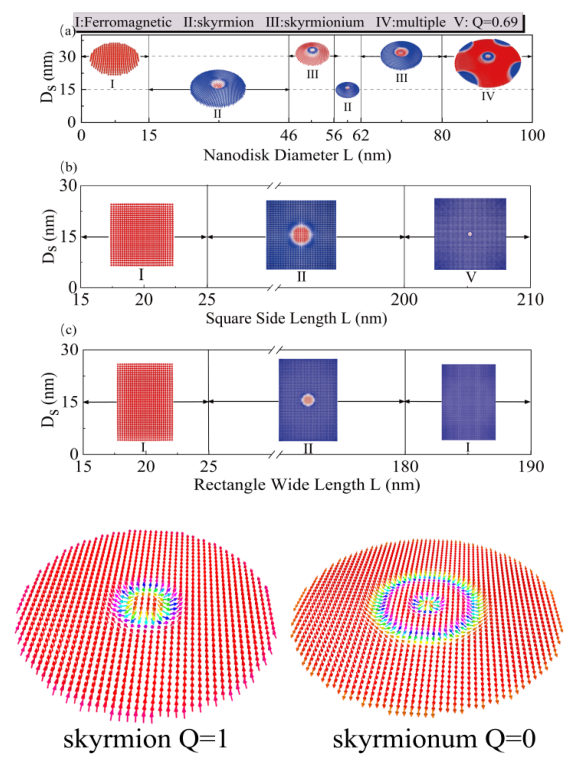
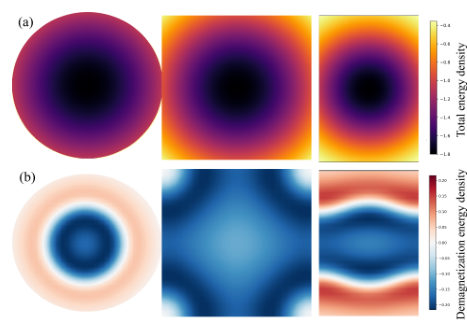

Summary. This study demonstrates how the shape and symmetry of magnetic nanostructures can be used to engineer the stability of topological textures. It shows that while disks allow for complex multi-state configurations, asymmetric structures like rectangles are better for stabilizing simple skyrmions, providing a design principle for next-generation spintronic memory.
Why it may be interesting. not directly relevant
Detailed structure
Main problem. Investigating how geometric symmetry, size, and external magnetic fields regulate the stability and phase transitions of topological magnetic states like skyrmions and skyrmioniums in nanostructures.
Main result. Nanodisks with rotational symmetry enable complex topological transitions (skyrmionium, multi-states), whereas squares and rectangles exhibit topological suppression due to corner-induced demagnetization, though they stabilize skyrmions over a broader parameter range.
Method. Micromagnetic simulations using the GPU-accelerable MuMax3 package with energy minimization via the conjugate-gradient-based Relax routine.
Model / system. Magnetic nanostructures (nanodisks, squares, and rectangles) with a 1 nm thickness, modeled using a Hamiltonian including exchange, DMI, magnetic anisotropy, Zeeman, and demagnetization energies.
Key observables. Topological charge (Q), total magnetic energy density, and topological phase diagrams (B-L plots).
Important parameters / regimes. Magnetic anisotropy (Ku = 6 MJ/m3), DMI constant (D = 4.1 mJ/m2), saturation magnetization (Ms = 914 kA/m), and nanostructure dimensions (L).
Assumptions / limitations. Simulations are performed at zero temperature (T = 0 K), and the material parameters represent a theoretical limit for high-performance spintronics.
Figures summary. Phase diagrams for squares and rectangles as a function of field and size; energy density variations across different geometries; and the variation of total magnetic energy density as a function of size.
Paper structure. The paper introduces the problem of geometric influence on skyrmions, details the micromagnetic model and parameters, presents comparative phase diagrams for different shapes, analyzes energy density variations, and concludes with implications for spintronic applications.
Abstract
We investigate the interplay of geometric symmetry, size, and external magnetic fields in regulating individual skyrmion states within magnetic nanostructures. By analyzing nanodisks, nanosquares, and nanorectangles, we demonstrate that rotational symmetry in nanodisks enables rich topological phase transitions, from ferromagnetic states to skyrmions, skyrmioniums, and multi-states, as their diameter increases. In contrast, square and rectangular structures exhibit suppressed topological complexity due to corner-induced demagnetization effects and reduced symmetries. Under perpendicular magnetic fields, nanodisks show field-driven transitions between skyrmionium and skyrmion states. By leveraging asymmetry, square and rectangular nanostructures stabilize skyrmions over a broader parameter range than nanodisks. These findings highlight geometric symmetry as a critical design parameter for tailoring skyrmion stability and functionality in spintronic applications such as multi-state memory and reconfigurable logic devices.
Geometry-Driven Nonlinear Orbital Magnetoelectric Effect
Authors: Jinxiong Jia, Zhenhua Qiao, Jian Wang
Type: theory · Category: other · PDF: https://arxiv.org/pdf/2605.17462v1
Analysis basis: full PDF text, analyzed in chunks
Summary. This paper proposes and theoretically describes a nonlinear orbital magnetoelectric effect that works in centrosymmetric materials where the linear version is forbidden. It identifies the quantum geometric (Hermitian connection) origin of the effect and demonstrates that it is detectable via magneto-optical Kerr measurements.
Why it may be interesting. not directly relevant
Detailed structure
Main problem. The paper investigates the Nonlinear Orbital Magnetoelectric Effect (NOME), which generates orbital magnetization quadratically in response to an electric field, specifically in centrosymmetric materials where the linear effect is forbidden.
Main result. The authors establish a gauge-invariant microscopic theory showing that NOME is driven by a Hermitian-connection structure and is permitted in a much broader range of magnetic point groups than the linear OME.
Method. The study uses an extended semiclassical formulation and Boltzmann equation approach to separate intrinsic and extrinsic contributions and employs magnetic point group symmetry analysis.
Model / system. The theory is applied to 2D materials, specifically utilizing a modified Kane-Mele model (honeycomb lattice) for intrinsic effects and a CuMnAs-like model for extrinsic effects.
Key observables. Orbital magnetization (delta M_c), intrinsic and extrinsic response tensors (chi), and the scaling of response with relaxation time (tau).
Important parameters / regimes. Relaxation time (tau), electric field strength (E = 10^5 V/m), and magnetic point group symmetries.
Assumptions / limitations. The analysis focuses primarily on 2D systems in the xy plane and assumes the validity of the relaxation time approximation.
Figures summary. Figure 1 shows band dispersion, intrinsic NOME components, and k-resolved integrand maps for the Kane-Mele model; Figure 2 shows the band dispersion for the CuMnAs model.
Paper structure. The paper introduces the NOME concept, develops a gauge-invariant microscopic theory, performs a symmetry analysis of the response tensor, provides specific model calculations (Kane-Mele and CuMnAs), and concludes with experimental feasibility estimates.
Abstract
We propose a nonlinear orbital magnetoelectric effect, which generates orbital magnetization quadratically in centrosymmetric materials where the linear orbital magnetoelectric effect is strictly forbidden. Using extended semiclassical formulation, we derive a gauge-invariant microscopic theory that separates intrinsic and extrinsic contributions and establishes their distinct dependence on the relaxation time, providing an experimental discriminator. In two-dimensional systems the nonlinear response is far less constrained by out-of-plane rotational symmetries than the linear orbital magnetoelectric effect, substantially enlarging the materials platform. Microscopically, the dominant contributions are governed by a Hermitian-connection structure. Finally, we estimate that the magnitude of the nonlinear orbital magnetoelectric effect lies within the sensitivity of state-of-the-art magneto-optical Kerr measurements.
Hydrostatic Pressure-Induced Evolution of the Superconducting Transition Temperature of Bi-2212: Insights from First-Principles Calculations
Authors: Shuhong Tang, Hanyu Wang, Di Peng, Da-yong Liu, Zhi Zeng, and Liang-Jian Zou
Type: theory · Category: strongly correlated electrons · PDF: https://arxiv.org/pdf/2605.18017v1
Analysis basis: full PDF text, analyzed in chunks
Summary. This paper provides a unified theoretical explanation for the inconsistent experimental observations of Tc changes in Bi-2212 under pressure. It demonstrates that pressure induces a self-doping effect that moves the system along the Tc-doping dome, making the response highly dependent on the starting doping level. The findings suggest that underdoped samples are the best candidates for achieving higher Tc under pressure.
Why it may be interesting. not directly relevant
Detailed structure
Main problem. Resolving conflicting experimental reports regarding the evolution of the superconducting transition temperature (Tc) in Bi-2212 under hydrostatic pressure.
Main result. The study identifies a 'dual effect' where pressure enhances the pairing scale while simultaneously driving 'self-doping' (hole transfer from Bi-O to CuO2 layers), explaining that Tc evolution depends on the initial doping state.
Method. A combination of first-principles DFT calculations, Wannier-function fitting, and a many-body treatment using the slave-boson mean-field method and BKT theory.
Model / system. The physical system is the high-Tc cuprate Bi-2212, modeled using a low-energy bilayer single-orbital t-J model including intralayer and interlayer hopping and superexchange interactions.
Key observables. Superconducting transition temperature (Tc), effective CuO2-plane hole concentration (delta_x), and superfluid stiffness (K_phys).
Important parameters / regimes. Pressure (P), hole concentration (delta_x), hopping parameters (t, t', t_perp), and superexcharge (J).
Assumptions / limitations. The rigid-band approximation is used for doping, and the superexchange interaction J is assumed to scale with t^2/U with U kept fixed.
Figures summary. Fig 1 shows the crystal structure, Brillouin zone, and pressure dependence of lattice parameters; Fig 3 shows the evolution of the Fermi surface and hole concentration under pressure.
Paper structure. The paper introduces the experimental conflict, describes the DFT and t-J model construction, presents the results of pressure-induced self-doping and parameter renormalization, and concludes with a unified interpretation of Tc evolution.
Abstract
High-pressure experiments on Bi$_2$Sr$_2$CaCu$_2$O$_{8+x}$ (Bi-2212) have reported apparently conflicting evolutions of the superconducting transition temperature $T_c$, ranging from weak enhancement to strong suppression and even a proposed second superconducting dome. To clarify the origin of these discrepancies, we combine first-principles density functional theory calculations with a pressure-dependent low-energy bilayer model solved by the slave-boson mean-field method together with a Berezinskii-Kosterlitz-Thouless estimate of phase coherence. Our results show that hydrostatic pressure induces a pronounced self-doping effect in Bi-2212: holes are transferred from the Bi-O charge-reservoir layers to the CuO$_2$ superconducting planes, leading to a systematic increase in the effective CuO$_2$-plane hole concentration $δ_x$. At the same time, pressure enhances the pairing scale through the renormalization of the hopping and superexchange parameters. As a consequence, the pressure evolution of $T_c$ is governed by the competition between pressure-enhanced pairing and pressure-driven motion along the common $T_c$-$δ_x$ dome, making $T_c(P)$ highly sensitive to the initial doping state. Even samples with very similar ambient-pressure $T_c$ but slightly different initial doping can therefore display qualitatively different pressure responses. This provides a unified interpretation of a large part of the disparate high-pressure behavior reported for Bi-2212 and suggests that slightly underdoped samples are more favorable than ambient-pressure optimal samples for achieving improved superconducting performance under pressure.
Lattice Relaxation in Moiré Heterobilayers
Authors: Christophe De Beule, Yiyang Lai, Liangtao Peng, Daniel Bennett, Shaffique Adam
Type: theory · Category: other · PDF: https://arxiv.org/pdf/2605.17805v1
Analysis basis: full PDF text, analyzed in chunks
Summary. This paper provides a new analytical framework to understand how lattice mismatch and twist angle cause structural relaxation in moiré heterostructures. It successfully predicts both in-plane atomic shifts and the emergence of out-of-plane buckling, offering a simpler alternative to complex numerical simulations.
Why it may be interesting. not directly relevant
Detailed structure
Main problem. Developing an analytical theory for lattice relaxation and structural buckling in twisted moiré heterobilayers, accounting for lattice mismatch and different elastic constants.
Main result. The authors derive a perturbative analytical framework that accurately predicts in-plane displacement fields and identifies a buckling instability driven by compressive strain near alignment.
Method. The study uses continuum elasticity theory, Helmholtz decomposition, and a 'one-shot' perturbation approach, validated against numerical self-consistent solutions and DFT-derived parameters.
Model / system. The model focuses on twisted moiré heterobilayers, specifically graphene/hBN and 2H TMD heterobilayers (e.g., MoTe2/WSe2), treating them as isotropic continuous membranes with interlayer adhesion energy.
Key observables. In-plane displacement fields (longitudinal and transverse components), layer center-of-mass and relative displacements, and out-of-plane height profiles (buckling).
Important parameters / regimes. Lattice mismatch (epsilon), twist angle (theta), Lamé constants (lambda, mu), Poisson's ratio, and bending stiffness (kappa).
Assumptions / limitations. Layers are treated as isotropic continuous membranes; initial derivation neglects out-of-plane deformations; the 'one-shot' approximation assumes the ratio of adhesion to elastic energy is small.
Figures summary. Figure 1 shows displacement field magnitudes and stacking potential; Figure 3 illustrates the buckling transition and resulting height profile; Figure 4 shows the local stacking energy landscape; Figures 5 and 6 display Fourier components of displacement fields for various systems.
Paper structure. The paper introduces the problem of heterobilayer relaxation, develops the analytical continuum elasticity theory, applies the theory to specific systems (graphene/hBN and TMDs), investigates the buckling instability mechanism, and validates results against numerical methods.
Abstract
We develop an analytical theory for lattice relaxation in twisted moiré heterobilayers, accounting for lattice mismatch, twist, external biaxial heterostrain, and different elastic constants. Starting from continuum elasticity, we derive the self-consistent equations for the in-plane displacement fields and obtain simple perturbative expressions for the layer-resolved in-plane displacement fields induced by lattice relaxation. We apply our theory to graphene on hBN and representative 2H transition metal dichalcogenide heterobilayers, including MoTe$_2$/WSe$_2$ and WSe$_2$/WS$_2$. Our analytical results agree very well with full numerical solutions over experimentally relevant parameters. We further show that heterobilayers can exhibit a buckling instability near alignment, driven by compressive in-plane strain due to moiré relaxation. Our results provide a simple theoretical framework for incorporating lattice relaxation in realistic moiré heterostructures.
Multiple Superconducting Phases in Rhombohedral Heptalayer Graphene
Authors: Chuanqi Zheng, Chushan Li, Chenyu Zhang, Kenji Watanabe, Takashi Taniguchi, Hao Yang, Dandan Guan, Liang Liu, Shiyong Wang, Yaoyi Li, Hao Zheng, Canhua Liu, Jinfeng Jia, Zhiwen Shi, Guorui Chen, Tingxin Li, Xiaoxue Liu
Type: experiment · Category: strongly correlated electrons · PDF: https://arxiv.org/pdf/2605.17890v1
Analysis basis: full PDF text, analyzed in chunks
Summary. This paper reports the first observation of superconductivity in moiréless rhombohedral heptalayer graphene. It identifies multiple superconducting phases and demonstrates that these states emerge from a half-metallic normal state, providing new insights into the layer-dependent nature of superconductivity in rhombohedral graphene systems.
Why it may be interesting. not directly relevant
Detailed structure
Main problem. The study investigates the origin and characteristics of superconductivity in moiréless rhombohedral heptalayer graphene (RHG) and how it depends on layer number and electronic structure.
Main result. The researchers observed three symmetric superconducting phases in RHG at low displacement fields, with the strongest state (SC1) showing zero resistance and a half-metallic normal state origin.
Method. Transport measurements were performed in a dilution refrigerator using low-frequency lock-in techniques, alongside quantum oscillation and Landau fan diagram analysis to study fermiology.
Model / system. The system consists of moiréless rhombohedral heptalayer graphene (RHG) and pentalayer graphene (RPG) encapsulated in hBN and equipped with dual-graphite gates for independent control of carrier density and displacement electric field.
Key observables. Longitudinal resistivity (rho_xx), differential resistivity (dV/dI), critical temperature (Tc), and quantum oscillation frequencies (fv).
Important parameters / regimes. Carrier density (n), perpendicular displacement electric field (D), temperature (T), and perpendicular magnetic field (B_perp).
Figures summary. Fig 1 shows the device schematic and n-D phase diagrams for RHG; Fig 2 displays temperature dependence of resistivity and dV/dI; Fig 3 focuses on magnetic field response and dV/dI maps.
Paper structure. The paper introduces the RHG system, presents the discovery of multiple superconducting phases, compares the magnetic field response between RHG and RPG, analyzes the fermiology of the normal state via quantum oscillations, and concludes with implications for the origin of superconductivity in RMG.
Abstract
Crystalline rhombohedral multilayer graphene (RMG) has emerged as an ideal platform for studying unconventional superconductivity. Here, we report the observation of superconductivity in moiréless rhombohedral heptalayer graphene (RHG) at zero magnetic field. The superconducting phases emerge at low displacement electric fields (|D| < 0.2 V/nm) and are symmetrically distributed about D = 0, with one robust state exhibiting zero resistance and two weaker superconducting features. Comparisons with rhombohedral pentalayer graphene (RPG) reveal distinct perpendicular magnetic-field responses, and quantum oscillation measurements indicate that superconductivity in RHG arises from a half-metallic normal state. These results highlight the strong dependence of superconductivity on layer number and electronic structure in RMG systems and provide new insights into its microscopic origin.
New Source of Spin-hot spot in displaced silicon double quantum dots
Authors: Sanjay Prabhakar
Type: theory · Category: quantum information and computing · PDF: https://arxiv.org/pdf/2605.16947v1
Analysis basis: full PDF text, analyzed in chunks
Summary. This paper discovers that displacing silicon double quantum dots creates unique 'spin-hot spots' where spin relaxation is significantly reduced compared to single dots. These findings suggest that carefully tuned double quantum dot architectures can achieve much longer decoherence times, which is critical for scalable quantum computing.
Why it may be interesting. This work is highly relevant to open quantum systems as it identifies specific parameter regimes (spin-hot spots) where the coupling to the environment (phonons) is drastically suppressed, providing a blueprint for enhancing qubit coherence.
Detailed structure
Main problem. The study investigates the mechanisms of spin relaxation in silicon single and double quantum dots driven by acoustic phonon deformation potentials, specifically looking for new sources of spin-hot spots.
Main result. The authors identify a new, unusual spin-hot spot in displaced double quantum dots where spin-relaxation rates are three to four orders of magnitude lower than conventional single quantum dots, potentially enabling millisecond-range decoherence times.
Method. The researchers used Finite Element Method (FEM) simulations via COMSOL Multiphysics to diagonalize the Hamiltonian and calculate spin-relaxation rates using the Fermi Golden Rule.
Model / system. The system consists of silicon single and double quantum dots (SQDs and DQDs) under in-plane and out-of-plane magnetic fields, modeled with a Hamiltonian including orbital, Zeeman, Rashba, and Dresselhaus spin-orbit coupling terms.
Key observables. Spin-relaxation rate (1/T1), spin-relaxation time (T1), and decoherence time (T2).
Important parameters / regimes. Inter-dot separation (up to 60 nm), magnetic field strengths (low-field < 1T vs. high-field ~4.5T), and acoustic phonon deformation potentials.
Assumptions / limitations. The model assumes electron-acoustic phonon interaction is dominated by deformation potentials (dilatation and shear) and uses a 2D Hamiltonian approach.
Figures summary. Figures show spin-relaxation rates vs. inter-dot distance, band structure crossings at specific magnetic fields, and probability density plots of spin and orbital states in single vs. double dots.
Paper structure. The paper begins by analyzing spin relaxation in single quantum dots, progresses to the effects of spatial separation in double quantum dots, explores the impact of magnetic field regimes on spin-hot spots, and concludes with the implications for qubit stability.
Abstract
Controlling electron spins in double quantum dots allows individual electrons to be trapped and manipulated for next-generation solid-state qubit devices. In this paper, the study analyzes spin relaxation due to deformation potentials of acoustic phonon in single and double quantum dots under in-plane and out-of-plane magnetic fields, showing that in single quantum dots the relaxation rate is highly sensitive to low in-plane magnetic fields ($<1T$) but converges near a spin-hot-spot region. In a single quantum dot, the spin-hot spot arises from well-understood level crossings between singlet and triplet states. In double quantum dots, a new and unusual spin-hot spot appears as the dots are pulled apart from the origin, with spin-relaxation rates three orders of magnitude lower than conventional single quantum dots. In displaced quantum dots dominated by magnetic confinement, two distinct spin-hot spots appear at different in-plane magnetic field strengths, where spin-relaxation time varies from millisecond to picosecond. When quantum dots are separated by about 60 nm, calculations predict oscillations in spin-hot spots as the in-plane magnetic field changes. These unusual spin-hot spot oscillations occur at low magnetic fields ($<1T$), resulting in spin-relaxation rates about four orders of magnitude lower than those of conventional high-field spin-hot spots ($\approx 4.5T$). The extremely low spin-relaxation rate at the spin-hot spot enables the preparation of qubit superposition states for quantum computing and information processing.
Observation of a Mott quantum spin Hall insulator in twisted WSe2
Authors: Yifei Jin, Yaqi Ma, Aoqian Zhang, Nan Zhang, Ulf Lampe, Ivana Wong, Kenji Watanabe, Takashi Taniguchi, Tze Kin Cheung, Ning Wang, Kaifei Kang
Type: experiment · Category: strongly correlated electrons · PDF: https://arxiv.org/pdf/2605.17335v1
Analysis basis: full PDF text, analyzed in chunks
Summary. The researchers discovered a new phase of matter in twisted WSe2 where a Mott insulator, driven by strong electron interactions, still supports topological edge transport. This 'Mott QSH insulator' is stabilized by an external magnetic field, showing that helical edge channels can survive in strongly correlated regimes. This finding provides a new way to create robust, interaction-resilient topological transport in moire materials.
Why it may be interesting. The paper demonstrates how strong interactions can be used to stabilize or manipulate topological edge states, which is relevant to the study of many-body dynamics and the robustness of topological phases in correlated systems.
Detailed structure
Main problem. Investigating the interplay between topology and strong Coulomb interactions to determine if a Mott insulating state can host robust Quantum Spin Hall (QSH) edge transport.
Main result. The observation of a magnetic-field-stabilized Mott QSH insulator at half-filling of the second moire band in twisted WSe2, where helical edge states persist despite strong correlations.
Method. Electrical transport measurements (local and nonlocal resistance) in quad-gated twisted WSe2 devices under varying magnetic fields, electric fields, and temperatures.
Model / system. A 2.29 degree twisted WSe2 (TMD) moire superlattice in a quad-gated heterostructure, characterized by a continuum model for K valley states with spin Chern numbers.
Key observables. Longitudinal resistance (Rxx), Hall resistance (Rxy), nonlocal resistance (Rnl), and in-plane magnetoconductance.
Important parameters / regimes. Moiré filling factors (nu = -1 to -4), twist angles (2.29 and 2.89 degrees), magnetic field (up to 7.5 T), and temperature (below 15 K).
Assumptions / limitations. The QSH states are protected by spin conservation rather than time-reversal symmetry, allowing robustness against magnetic fields.
Figures summary. Fig 1: Device geometry and schematic of Mott QSH state; Fig 2: Evolution of Rxx and Rxy with filling and electric field; Fig 3: Rxx dependence on magnetic field and emergence of the nu = -3 state; EDFs: Band structures and nonlocal resistance ratios.
Paper structure. Introduction to the problem of topology vs correlations, description of the experimental WSe2 platform, transport results showing the emergence of the Mott QSH state at nu = -3, validation via nonlocal and magnetic field dependence, and theoretical discussion of band topology.
Abstract
Quantum spin Hall (QSH) insulators and Mott insulators are conventionally regarded as distinct insulating phases, arising from band topology and strong Coulomb interactions, respectively. Here, we report the observation of QSH edge transport in a magnetic-field-stabilized Mott insulating state at half filling of the second moire band in a 2.29 degree twisted WSe2 device. This state exhibits a resistance plateau identical to that of the single-particle QSH state at full filling of the first moire valence band, indicating the same number of helical edge channels. Electrical transport measurements reveal nearly quantized resistance that is insensitive to vertical electric field, out-of-plane magnetic field, and temperature below 5 K. Pronounced nonlocal transport and strong negative in-plane magnetoconductance further support helical edge conduction, establishing robust edge transport in the strongly correlated regime. Temperature-dependent Hall measurements reveal a characteristic temperature scale of approximately 10 K, corresponding to an energy scale of about 1 meV. Our results demonstrate that spin-conserved QSH edge states can persist in a half filled, strongly correlated insulating phase and under external magnetic field, opening a route toward interaction-resilient topological transport in moire quantum materials.
Probing Dielectric Screening in van der Waals Heterostructures via Pressure-Tuned Exciton Rydberg Series
Authors: Shalini Badola, Adlen Smiri, Thomas Pelini, Aditi Moghe, Tristan Riccardi, Amit Pawbake, Kenji Watanabe, Takashi Taniguchi, Iann C. gerber, Clement Faugeras
Type: both · Category: other · PDF: https://arxiv.org/pdf/2605.18506v1
Analysis basis: full PDF text, analyzed in chunks
Summary. This paper demonstrates that the excited states of excitons in WSe2/hBN heterostructures can be used to probe changes in the surrounding dielectric environment under pressure. It shows that the observed Rydberg series compression is due to enhanced electrostatic screening rather than changes in the semiconductor's band structure. This establishes a new method for using 2D excitons as quantum sensors for dielectric metrology.
Why it may be interesting. not directly relevant
Detailed structure
Main problem. Determining whether the pressure-induced changes in the exciton Rydberg series in WSe2/hBN heterostructures are driven by modifications to the electronic band structure or by changes in the dielectric screening environment.
Main result. The observed compression of the exciton Rydberg series is primarily caused by enhanced dielectric screening due to the increasing dielectric constant of hBN and decreasing interlayer distance under pressure, while the WSe2 band structure remains largely stable.
Method. Low-temperature photoluminescence spectroscopy within a diamond anvil cell is combined with a microscopic dielectric model and Density Functional Theory (DFT) calculations.
Model / system. A monolayer of WSe2 encapsulated in hexagonal boron nitride (hBN) forming a vdW heterostructure, modeled using a quasi-2D Rytova-Keldysh-like potential that accounts for finite layer thickness and an interlayer gap.
Key observables. Exciton Rydberg series (1s, 2s, 3s), energy separations (1s-2s, 1s-3s), g-factor, and dark-bright energy splitting.
Important parameters / regimes. Hydrostatic pressure up to 3 GPa, interlayer distance (d), hBN dielectric constant (epsilon_hBN), and WSe2 thickness (h).
Assumptions / limitations. The electronic band structure (effective masses and band gap) of WSe2 is assumed to be insensitive to pressure up to 3 GPa, and the interlayer vacuum spacing scales with pressure similarly to the Se-BN separation.
Figures summary. Fig 1 shows the experimental setup and the pressure-induced shift/compression of the PL spectra; Fig 2 shows the atomic structure; Fig 3 shows the pressure dependence of the hBN dielectric constant and the stability of the WSe2 band structure.
Paper structure. The paper introduces the experimental setup and observations of the Rydberg series under pressure, presents a microscopic dielectric model to interpret the data, provides DFT verification of band structure stability, and concludes with the application of excitons as dielectric sensors.
Abstract
Excitons in two-dimensional semiconductors are directly exposed to the environment and are sensitive to the dielectric properties of their surrounding. Here, we show that the Rydberg series of excited states of excitons in a monolayer WSe$_2$ encapsulated in hexagonal boron nitride (hBN) can be used to probe the pressure-induced modifications of the surrounding dielectric properties. We propose a model based on the pressure induced evolution of the interlayer distances in this van der Waals heterostructure and on the bulk dielectric properties of hBN. This approach allows a direct measurement of the dielectric constant of pressurized hBN and establishes a new methodology for dielectric sensing.
Qumus: Realization of An Embodied AI Quantum Material Experimentalist
Authors: Lihan Shi, Zhaoyi Joy Zheng, Xinzhe Juan, Yimin Wang, Ming Yin, Mayank Sengupta, Kristina Wolinski, Yanyu Jia, Jingzhi Shi, Derek Saucedo, Neill Saggi, Haosen Guan, Kenji Watanabe, Takashi Taniguchi, Ali Yazdani, Mengdi Wang, Sanfeng Wu
Type: experiment · Category: other · PDF: https://arxiv.org/pdf/2605.18407v1
Analysis basis: full PDF text, analyzed in chunks
Summary. This paper introduces Qumus, an embodied AI system capable of autonomously performing the complex, multi-step experimental processes required to create 2D quantum materials. By integrating LLM-based reasoning with robotic hardware, the system can independently execute exfoliation, flake searching, and device stacking. This represents a significant step toward self-improving, autonomous laboratories for accelerated materials discovery.
Why it may be interesting. not directly relevant
Detailed structure
Main problem. The manual synthesis, identification, and assembly of 2D van der Waals structures are time-consuming, difficult to reproduce, and heavily dependent on expert intuition, creating a bottleneck in quantum materials research.
Main result. The development of Qumus, the first embodied AI quantum material experimentalist, which autonomously performs the full scientific cycle from hypothesis generation to the physical fabrication of graphene transistors.
Method. A multi-agent AI architecture (using LLMs like GPT, Gemini, etc.) integrated with a robotic mini-laboratory, utilizing computer vision (YOLOv8) for object detection and a closed-loop feedback system for error correction and experimental iteration.
Model / system. A robotic mini-laboratory consisting of a tape-transfer gantry, two robotic arms, a multi-magnification optical microscope, and temperature-controlled vacuum stages for the mechanical exfoliation and stacking of 2D materials.
Key observables. 2D flake thickness (via CIE-LAB color space), flake size/area, device functionality (field-effect transistor performance), and AI performance metrics (consistency, efficiency, and report quality).
Important parameters / regimes. Substrate heating temperature, heating dwell time, number of massage cycles, and tape peel-off speed.
Assumptions / limitations. The system assumes that high-level scientific reasoning can be effectively delegated to LLM-based agents and that physical tasks can be discretized into executable 'atom' and 'molecule' workflows.
Figures summary. Fig 1 shows the integrated AI architecture and physical hardware setup; Fig 2 illustrates the agentic workflow, plan generation, and the resulting graphene flake; Ext. Data figures detail the computer vision pipeline, object recognition via QR codes, and comparative analysis of different LLM personalities.
Paper structure. Introduction of the 2D materials bottleneck, description of the Qumus hardware and multi-agent software architecture, demonstration of autonomous graphene creation, demonstration of complex device fabrication, and evaluation of the AI's reasoning and efficiency.
Abstract
While modern Large Language Models (LLMs) and agentic artificial intelligence (AI) have demonstrated transformative capabilities in digital domains, the realization of embodied AI capable of real-world scientific discovery remains a difficult frontier. The advancements are hindered by the inherent complexity of integrating high-level reasoning, multimodal information processing and real-time physical execution. Here we introduce Qumus, the first AI quantum materials experimentalist. Physically embodied within a robotic mini-laboratory, Qumus is an intelligent, multimodal, and multi-agent system designed for the creation and nano-processing of atomically thin two-dimensional (2D) materials and stacked van der Waals (vdW) structures. Qumus autonomously navigates the full scientific cycle, from hypothesis generation and protocol planning to multi-step experimental execution, result analysis and reporting, acting as an experimentalist. Markedly, the system has achieved, for the first time, the AI-creation of graphene, as well as the first AI-fabrication of complex nanodevices including atomically thin field-effect transistors via vdW stacking. Qumus excels at these tasks by demonstrating autonomous error correction and closed-loop experimentation. Our results establish a generalizable framework for self-improving embodied AI systems that learn directly from the quantum world, opening a pathway toward accelerated discovery in quantum materials, electronics and beyond.
← Index · ← Previous · Next →